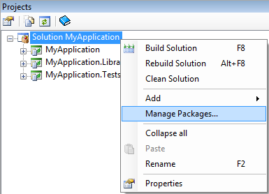
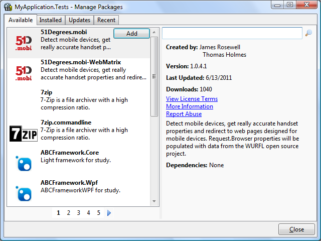
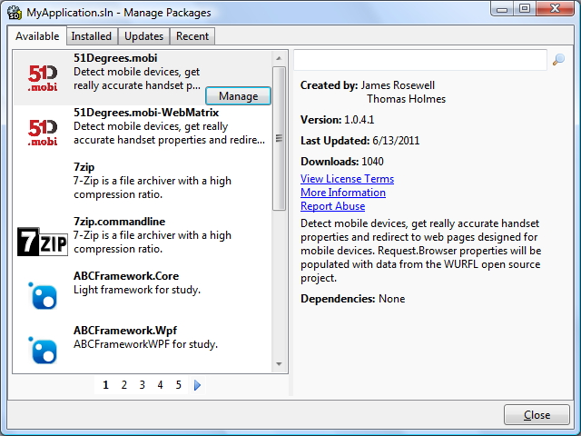
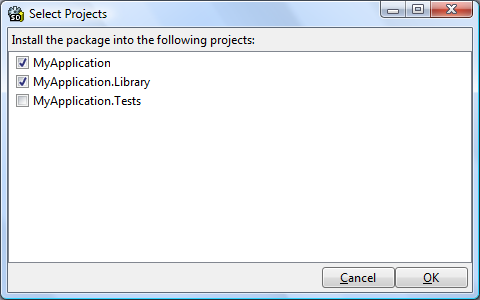

The NuGet 1.4 release included some great new features for managing NuGet packages across a solution. SharpDevelop has now been updated to NuGet 1.4 so let us take a look at the changes in the latest version of SharpDevelop.
The first thing that you will notice is that the menu name has changed. When you right click on a project or a solution you now select Manage Packages to open the Manage Packages dialog.

The dialog name has changed and now shows the name of the project or the solution in the its caption. Opening the dialog by right clicking on a project and selecting Manage Packages allows you to add or remove NuGet packages from the selected project. In the screenshot below the MyApplication.Tests project was selected when the Manage Packages dialog was opened.

Right clicking on the solution and selecting Manage Packages allows you to add or remove NuGet packages from multiple projects in one step. In the screenshot below the MyApplication solution was selected when the Manage Packages dialog was opened.

NuGet packages can now be added to multiple projects in one step. Find the NuGet package you want to add and click the Manage button. You will then be prompted to select which project you want the package to be installed into.

Click the OK button to install the package into the selected projects.
To remove a NuGet package from multiple projects switch to the Installed packages tab, select the package and click the Manage button. You will then be shown a list of projects. To remove a package uncheck one or more projects and click the OK button.
The Update-Package PowerShell command has been changed to support updating a NuGet package across multiple projects. The following commands can be used in the Package Management Console window to update packages across projects.
update-package
update-package -ProjectName MyProject
update-package jQuery
That covers the changes in the current version of SharpDevelop. Note that not all of the features that were added in NuGet 1.4 are currently available in SharpDevelop. For example, the Package Visualiser and the safe updating of NuGet packages using Update-Package -Safe, have not been implemented.